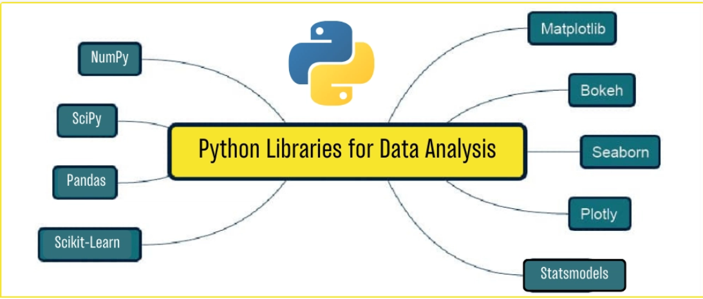
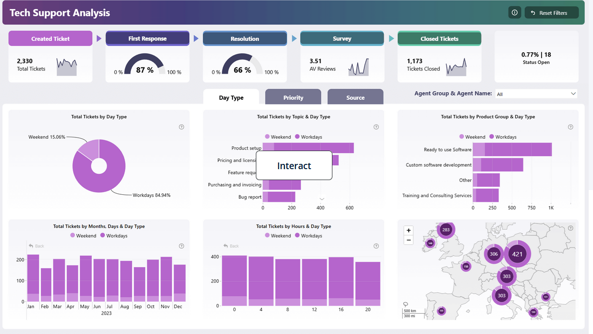

SQL
SQL (Structured Query Language) is a programming language used for managing and manipulating relational databases. It allows users to query, insert, update, and delete data stored in a database. SQL is widely used in data analytics for retrieving and analyzing data from databases.
Read more

Python
Python is a high-level programming language that is widely used in data analytics. It has a rich ecosystem of libraries and frameworks, such as Pandas, NumPy, and Matplotlib, which make it easy to manipulate and analyze data. Python is also known for its simplicity and readability, making it a popular choice for data analysts.
Read more

Power BI
Power BI is a business analytics tool that enables users to visualize and analyze data. It provides a wide range of data visualization options, including charts, graphs, and dashboards. Power BI is widely used in data analytics for creating interactive reports and dashboards that help businesses make informed decisions.
Read more